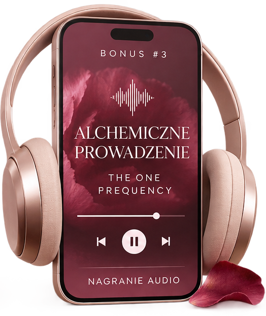
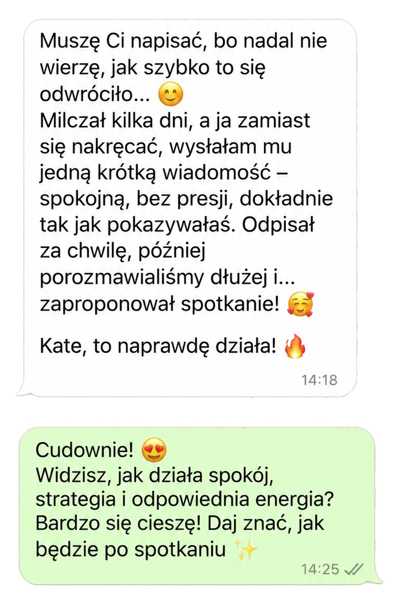

Bonus #1
e-book „Dlaczego on się oddala”
Gdy on milczy, łatwo wpaść w spiralę. Ten e-book pokazuje, co naprawdę oznacza jego cisza i jak zareagować spokojnie, zanim cokolwiek wyślesz.
Nawet jeśli teraz czyta i nie odpisuje.
Bez gier, bez udawania, że Ci nie zależy.
I bez kolejnego wieczoru z telefonem w ręku.
Cześć, tu Kate Jaskólska…
Za chwilę pokażę Ci, jak napisać konkretne wiadomości,
po których to on zaczyna czekać na Twoje.
Ten rodzaj wiadomości, na który mężczyzna reaguje silniej niż na zdjęcia, komplementy czy prośby.
A prawie żadna kobieta nie wie, jak je pisać.
Dlatego powstała Formuła Uzależniających Wiadomości,
żebyś nie musiała już zgadywać, co mu napisać.
Kiedy wiesz, jak napisać taką wiadomość, stajesz się kobietą, o której on myśli od rana do wieczora.
Kobietą, której wiadomość zostaje mu w głowie.
Której nie może wyrzucić z myśli.
I nie ma znaczenia, co się teraz dzieje.
Bo nie chodzi o to, czy piszesz.
Chodzi o to, jak dokładnie piszesz.
Chodzi o jeden rodzaj wiadomości, na który on reaguje zupełnie inaczej.
Nigdy Ci o nim nie powie.
Często sam nie wie, dlaczego jedna wiadomość zostaje mu w głowie, a inna nie.
Ja nazywam to
EFEKTEM POGONI
Jedna wiadomość może ten efekt zgasić, i on milknie.
Inna potrafi go obudzić, i wtedy to on pisze pierwszy.
Dopytuje. Proponuje. Zabiega.
Za chwilę pokażę Ci, jak napisać tę wiadomość mężczyźnie, który teraz milczy.
Ale najpierw muszę Ci opowiedzieć, skąd to wiem.
Siedziałam na zimnych kafelkach z telefonem w ręku.

Na początku wszystko było jak z filmu.
Odpisywał od razu.
Pisał na dobranoc.
A potem coś się zmieniło.
Odpisywał później.
Krócej.
Bez wiadomości na dobranoc.
Pisałam do niego, a on odpisywał jednym słowem.
Albo wcale.
Tego wieczoru napisałam.
Przeczytał. Nie odpisał.
Napisałam jeszcze raz.
Przeczytał. Cisza.
Wiedziałam, że „nie powinnam”.
Że trzeba dać mu przestrzeń.
I wtedy zrobiłam coś, czego nie zapomnę nigdy.
Coś, co prawie zniszczyło wszystko.
Wysłałam wiadomość, którą w tej sytuacji wysyła prawie każda kobieta.
I właśnie ta wiadomość sprawiła, że zniknął na dobre.
Zostałam z telefonem i z ciszą, która nie chciała się skończyć.
Myślałam, że problem jest we mnie.
Że muszę pisać więcej.
Bardziej się angażować.
Pokazywać, jak bardzo mi zależy.
Ale im bardziej się starałam, tym bardziej on się wycofywał.
Wydałam ponad 10 000 zł na coachingi, kursy i sesje.
Tylko po to, żeby zrozumieć, jak naprawdę działa męskie zaangażowanie, napięcie i emocjonalne przywiązanie.

I wtedy coś przykuło moją uwagę.
Zaczęłam przyglądać się starym rozmowom.
Tym, po których on znikał.
I tym nielicznym, po których nagle wracał, dzwonił, proponował spotkanie.
Czytałam te zdania w kółko.
Szukałam różnicy.
Zobaczyłam coś, czego wcześniej nie widziałam:
Nie chodzi o to, czy piszesz.
Chodzi o to, jak dokładnie piszesz.

Wiadomości, po których znikał, były pisane z lęku.
Brzmiały jak cicha prośba: „powiedz mi, że wszystko jest w porządku”.
Te, po których wracał, były lekkie.
Spokojne.
Pewne siebie.
Zostawiały mu miejsce, żeby to on zrobił krok.
A potem zobaczyłam dokładnie ten sam schemat u innych kobiet, które zaczęły używać tych wiadomości.
On wracał do rozmowy.
Angażował się.
Przestawał wycofywać się bez powodu.
On wracał do rozmowy.
Angażował się.
Widzisz „przeczytane”.
Potem cisza.
Nie zrobiłaś nic złego.
Nikt po prostu nie powiedział Ci, co napisać, gdy on milczy.
Nie w teorii.
Nie „bądź sobą”.
Konkretnie:
Za chwilę zobaczysz, czemu jedna wiadomość go gasi,
a inna sprawia, że to on pisze pierwszy.
W jednym zdaniu:
mężczyzna angażuje się w to, o co sam musi się postarać.
To, co przychodzi łatwo, jest oczywistością.
To, czego musi spróbować, zaczyna
CENIĆ
Temu poświęca myśli.
Czas.
Uwagę.
Każda Twoja wiadomość coś mu mówi.
Nie słowami.
Energią. Nawet przez ekran.
Wiadomość z lęku brzmi: „już mnie masz.”
I on pozwala sobie na mniej.
Na „ok”.
Na ciszę.
Zapamiętaj tylko to:
Nie stajesz się jego obsesją, kiedy dajesz mu więcej.
Stajesz się nią, kiedy dajesz mu przestrzeń, żeby to on dał więcej Tobie.
Nie przez gry.
Nie przez udawanie, że Ci nie zależy.
Przez spokój i napięcie w jednym zdaniu.
Kiedy jego krok ma znaczenie, zaczyna inwestować.
I wtedy to on wraca do rozmowy.
To on pisze pierwszy.
To on czeka na Twoją odpowiedź.
To odkrycie tak mnie poruszyło, że zaczęłam zbierać wiadomości, które naprawdę działały.
Te, po których on wracał do rozmowy.
Te, po których nagle chciał więcej.
Każda musiała spełnić 3 warunki:
Punkt zwrotny był zawsze jeden.
Jedna wiadomość, po której pomyślał:
„Ona jest inna. Chcę więcej.”
Czasem jedno zdanie.
Czasem pytanie.
Czasem to, czego nie napisała.
Wszystkie budziły w nim Efekt Pogoni.
Pokazałam je kobietom, z którymi pracuję.
Ten sam schemat: gdy zamilkł, gdy odpisywał chłodno, gdy najpierw się starał, a potem się wycofał.
Dopracowałam każdą.
Dodałam, kiedy i dlaczego jej użyć.
I powstała kompletna formuła:
Formuła Obsesyjnych Wiadomości
Jak zamienić jego milczenie w wiadomości, których nie nadążysz czytać. I sprawić, żeby sam prosił o więcej.

Przestajesz zgadywać.
Przestajesz czekać.
Piszesz tak, że to on nie może przestać o Tobie myśleć.
Gotowe wiadomości.
Proste zasady.
Wiesz, co dzieje się w jego głowie, kiedy widzi Twoje imię na ekranie.
Możesz zacząć jeszcze dziś wieczorem.
Znaki, których szukasz:
Odpisuje szybciej, niż się spodziewasz…
Sam zaczyna rozmowę…
I nie może się doczekać, kiedy znowu się zobaczycie.
Dostajesz konkretne wiadomości na konkretne sytuacje.
Nie radę „daj mu przestrzeń”.
Jeśli żaden z tych punktów Cię nie dotyczy, czytaj dalej.
Za chwilę zobaczysz, co jest w środku.
Prawie każda kobieta wysyła go nieświadomie.
I co napisać zamiast tego, żeby nie wyglądało, że czekasz.
Krótki tekst, po którym on sam zaczyna pisać.
On odkłada wszystko i odpisuje od razu.
Zamiast „coś się stało?” rozmowa ożywa w minutach.
Zanim on poczuje, że może pozwolić sobie na mniej.
Na chwilę, gdy czujesz, że go tracisz. Bez desperacji.
W 80% przypadków nie jest tym, czego się boisz.
Gdy on milczy, łatwo wpaść w spiralę. Ten e-book pokazuje, co naprawdę oznacza jego cisza i jak zareagować spokojnie, zanim cokolwiek wyślesz.
Żebyś zrozumiała, z jakiej energii piszesz — i dlaczego jedne wiadomości przyciągają, a inne odpychają.

Nagranie, które wycisza spiralę myśli, zanim napiszesz coś z lęku.

Kate Jaskólska

Może jesteś dziś tam, gdzie ja byłam.
Z telefonem w ręku.
Z „przeczytanymi”.
Z pytaniem, co napisać, żeby go nie stracić.
Dopiero kiedy zrozumiałam, że nie chodzi o to, czy piszesz, tylko jak dokładnie piszesz, wszystko zaczęło się odwracać.
Dlatego powstała ta formuła.
Żebyś nie musiała zgadywać.
Zanim powiem Ci cenę, zatrzymaj się.
Pomyśl, ile kosztowały Cię relacje, które kończyły się tak samo.
To samo „ok”.
Ta sama cisza.
Kobiety płacą dziś od 400 do 700 zł za jedną konsultację.
Jedną rozmowę.
Bez gotowych wiadomości.
Bez możliwości powrotu, gdy on znowu zamilknie.
Ty dostajesz cały proces.
Gotowe wiadomości.
I możesz do nich wrócić, gdy on znowu zamilknie.

Z Waszych wiadomości


| 📱 Formuła Obsesyjnych Wiadomości | 197 zł |
| 📖 Bonus #1: „Dlaczego on się oddala” | 97 zł |
| ✨ Bonus #2: „6 Archetypów Kobiecości” | 97 zł |
| 🎧 Bonus #3: „Alchemiczne Prowadzenie” | 397 zł |
| Łączna wartość | |
| Twoja cena dzisiaj | 97 zł |
Dostęp od razu po zakupie.
90 dni gwarancji zwrotu pieniędzy.
Jednorazowo. 97 zł.
Mniej niż dwa wieczory, w których znowu analizujesz „przeczytane” i ciszę.
Bo konsultacja to moje godziny z jedną kobietą.
A tę formułę stworzyłam raz, w wersji cyfrowej, dla każdej, która dziś siedzi z telefonem w ręku.
Cena nie ma Cię zatrzymać.
To ma być pierwszy, łatwy krok.
„Tak, Kate. Chcę wiedzieć, co napisać, gdy on milczy. Daj mi od razu dostęp do:
Co mówią kobiety, które już piszą inaczej

Nie musisz przerabiać wszystkiego od razu.
Skąd taka gwarancja?
Bo widziałam, jak te wiadomości działają.
Na sobie.
Na kobietach, które ich użyły.
A kiedy zaczniesz, ostatnią rzeczą, o której pomyślisz, będzie zwrot.
Bo będziesz zajęta
czytaniem jego wiadomości.
Tak.
Bo to nie zależy od „tego jednego faceta”.
Mężczyźni podobnie reagują na to, jak piszesz.
Zmieniasz wiadomość, zmieniasz jego reakcję.
Właśnie wtedy ma to największy sens.
Masz konkretne wiadomości na ciszę, chłód i wycofanie.
Często już po pierwszej wiadomości.
Zmienia się dynamika.
On to czuje.
A na spokojne testowanie masz 90 dni.
Nie.
Nie udajesz, że Ci nie zależy.
Piszesz ze spokoju.
A on dostaje przestrzeń, żeby się postarać.
Dostęp dostajesz natychmiast po zakupie na www.katejaskolska.pl.
Ustawiasz hasło i możesz zaczynać.
Nie widzisz maila? Sprawdź spam albo folder „inne”.
Nie podejmę tej decyzji za Ciebie.
Ale pamiętaj:
Jedyne, co możesz stracić,
to kolejny wieczór w ciszy.
Telefon leży obok.
Nie sprawdzasz go co minutę.
Wysłałaś jedną wiadomość.
Krótką.
Spokojną.
I to on odpisuje.
Słyszysz dźwięk powiadomienia.
Tym razem to nie Ty czekasz.
Przestajesz pytać, co on miał na myśli.
Jesteś kobietą, której wiadomość zostaje mu w głowie.
Która nie goni.
Którą wybiera.
To wszystko czeka po drugiej stronie przycisku.
Ściskam Cię mocno i do zobaczenia w środku,
Kate
Kate Jaskólska
Ponad 1000 kobiet, które dziś czują się kochane i zaopiekowane
P.S. Jeśli tylko przewinęłaś na dół, oto skrót:
Formuła Obsesyjnych Wiadomości — gotowe wiadomości na ciszę, chłód i wycofanie — plus 3 bonusy.
Dziś za 97 zł, z 90 dniami gwarancji zwrotu.
P.P.S. Najgorsze, co możesz zrobić dziś wieczorem, to wysłać mu kolejne „hej, wszystko ok?”.
Zanim cokolwiek napiszesz, zajrzyj do środka.
Masz 90 dni na decyzję.
Nie ryzykujesz niczym.
Chętnie pomogę. Pytania przed zakupem i prośby o fakturę wysyłaj na jaskolska.kate@gmail.com.